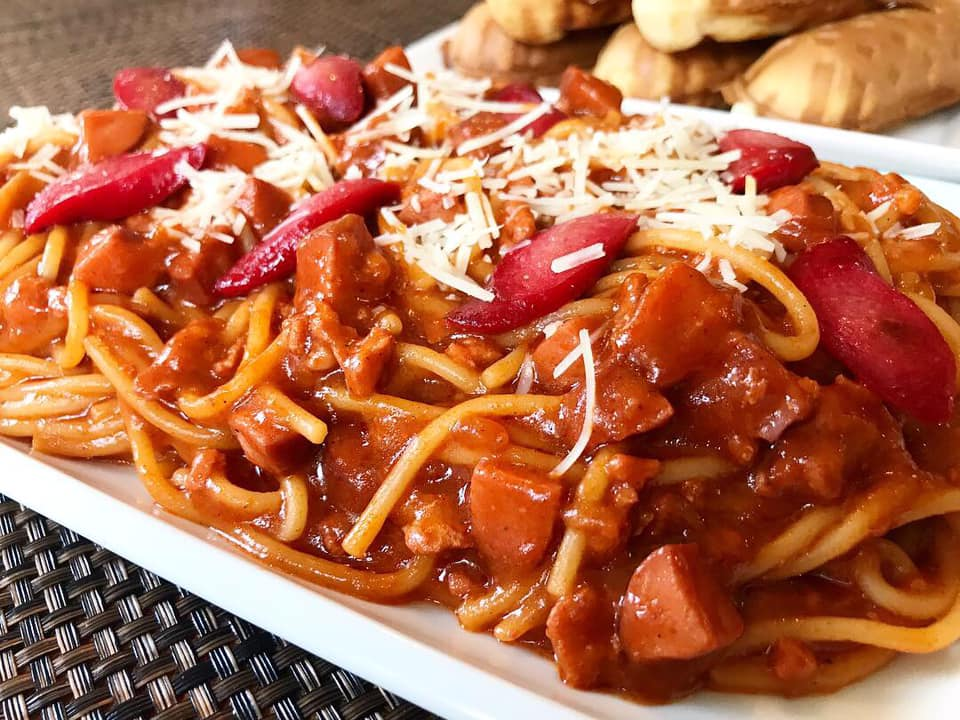

Filipino Spaghetti
Filipino Spaghetti Recipe

Ingredients
- 2 lbs. Spaghetti Noodles
- 1 lbs. ground pork
- 6 ounces luncheon meat minced
- 4 pieces hotdogs or beef franks
- 35 ounces Filipino Style Spaghetti Sauce
- 1/2 cup shredded cheddar cheese
- 1 1/2 cups beef broth
- 1 medium onion minced
- 1 teaspoon minced garlic
- salt and pepper to taste
- 3 table spoons cooking oil
Instructions
- Follow the package directions for cooking the Spaghetti noodles. Transfer to a bowl once done.
- In a pan, heat the oil.
- Cook the onion and garlic in a pan.
- Add the ground pork once the onions have softened. Cook until the color changes to a light brown tint.
- Combine the luncheon meat and hotdog in a mixing bowl. Cook for 2 to 3 minutes, stirring occasionally.
- In a large mixing bowl, combine the Spagehtti Sauce and the beef broth. Stir and bring to a boil. Simmer for 30 minutes with the lid on.
- Taste the sauce and season with salt and pepper if necessary.
- Serve, share and enjoy!